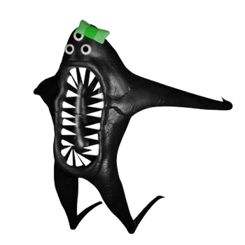

主なキャラクター
バンバン幼稚園のポップで可愛いマスコットたち。その実態は、恐ろしいモンスター・・・？
Garten of Banbanの世界を彩る、個性豊かなキャラクターを大紹介！
バンバン幼稚園のポップで可愛いマスコットたち。その実態は、恐ろしいモンスター・・・？
Garten of Banbanの世界を彩る、個性豊かなキャラクターを大紹介！
| 画像 | 名前 | 説明 | ケースNo. | ゲノム |
|---|---|---|---|---|
| バンバン (Banban) |
バンバン幼稚園の看板的マスコット。 幼稚園の内部事情に詳しく、主人公が我が子を探すのに協力してくれる。 なぜか自身をマスコットではなく、人間だと信じて疑わない。 知能が高く友好的だが、まれに狂暴化することも・・・？ |
6 | ①人間 ②ジバニウム |
|
| バンバリーナ (Banbaleena) |
バンバンと見た目が似ているマスコット。 自身をバンバン幼稚園の先生だと思い込んでおり、生徒の教育に対して非常に熱心に向き合っている。 しかし、授業の内容はどこか狂気的かつ支配的で、恐怖を感じるものばかり。 |
7 | ①人間 ②ジバニウム |
|
| ジャンボ・ジョッシュ (Jumbo Josh) |
とても巨大な体を持つ、緑色のマスコット。 非常に凶暴かつ本能的な性格。 知能は低いが、パワーはマスコットの中で最も強く、一度暴れ出すと手が付けられなくなる。 野菜や果物が大好きらしい。 |
不明 | 不明 | |
| オピラバード (Opila BirdBird) |
ピンク色の鳥のようなマスコット。 とても警戒心が強く、攻撃的な性格。 敵だと判断した相手には容赦なく襲い掛かる一方、小さな子供に対しては非常に温厚で、母親のような行動を見せる。 |
10 | ①フラミンゴ ②ジバニウム |
|
| ナブナブ (Nabnab) |
大きな口と三つ目が特徴的な、青色のクモのマスコット。 攻撃性が非常に高く、行動の予測も難しいため、マスコットの中でも特に存在が危険視されている。 実は寂しがり屋なのか、よく物陰から主人公のことを覗き見ている。 |
8 | ①アシダカグモ ②ジバニウム |
|
| キャプテン・フィドルズ (Captain Fiddles) |
とても小柄で可愛らしいマスコット。 言葉を話すことは出来ないが、高い身体能力と、人間の幼児程度の知能・感情を持っている。 マスコットの中では唯一の"成功例"らしいが、現在の消息は不明。 |
12G | ①サル ②ジバニウム |
|
| スティンガー・フリン (Stinger Flynn) |
巨大なオレンジ色の体を持つ、一つ目のクラゲのマスコット。 知能の高さはマスコットの中でもトップクラスだが、本人は海に帰って普通のクラゲとして生きることを夢見ている。 触手で刺した相手に幻覚を見せるなど、特殊な能力を持っている。 |
13 | ①人間 ②クラゲ ③ジバニウム |
|
| スロー・セリーヌ (Slow Seline) |
歯をむき出して笑うカタツムリのマスコット。 普段はカタツムリらしく、ゆっくりと床を這いながら移動しているが、いざという時は音速レベルの超スピードで駆け抜けていく。 瞬間移動ができるなどの噂もあり、その正体は未だ謎に包まれている。 |
11 | ①人間 ②カタツムリ ③ジバニウム |
|
|  | ナブナリーナ (Nabnaleena) |
ナブナブの同型となるクモのマスコット。 研究室に未完成の状態で放置されていたが、主人公が残りの手術を行うことで誕生した。 ナブナブとは当初良好な関係を築いていたが、とある事態のせいで離れ離れになってしまう。 |
不明 | ①アシダカグモ ②ジバニウム |
 |
シェリフ・トードスター (Sheriff Tordstar) |
帽子を被ったヒキガエルのマスコット。 とても正義感の強い性格で、自身を王国の平和を守る"保安官"であると自負している。 主人公のことを「相棒」と呼び、非常に友好的な態度で接していたが、事態が進むにつれて少しづつ様子がおかしくなっていき・・・ |
9 | ①人間 ②ヒキガエル ③ジバニウム |
| クイーン・バウンセリア (Queen Bounselia) |
王冠を被った巨大なカンガルーのマスコット。 幼稚園の地下にある"王国"を統べる女王で、とても心優しく慈悲深い性格。 お腹の袋の中には、自身の夫と子供たちが封印されており、「笑う」などの反射的な行動をすると飛び出てきてしまう。 |
14 | ①人間 ②カンガルー ③ジバニウム |
|
 |
ビターギグル (BitterGiggle) |
体の色や形状が左右で分かれているマスコット。 元々は王国で女王に仕える宮廷道化師だったが、女王を笑わせてお腹の封印を解こうとしたため、王国から追放された。 ジョークが大好きで、自身のジョークでみんなに笑ってもらうことが何よりの願い。 |
17 | 不明 |
| ダダドゥー卿 (Sir.Dadadoo) |
黒いヒルのような体を持つマスコット。 バウンセリアの夫で、かつては反乱軍のリーダーを務めていたが、仲間たちの裏切りにより、お腹の中に封印されてしまった。 封印が解かれた今は復讐の鬼となり、幼稚園のマスコットたちを次々に洗脳していく。 |
18 | 不明 | |
| シリンジョン (Syringeon) |
独特な頭の形状と、4本の腕を持つマスコット。 天才的な頭脳と技術力を持ち、かつては研究チームに所属する外科医として、実験や手術に協力していた。 その優秀さとは裏腹に、性格は非常に冷酷かつ独善的で、根っからのマッドサイエンティスト気質。 |
4 | ①人間 ②ジバニウム |